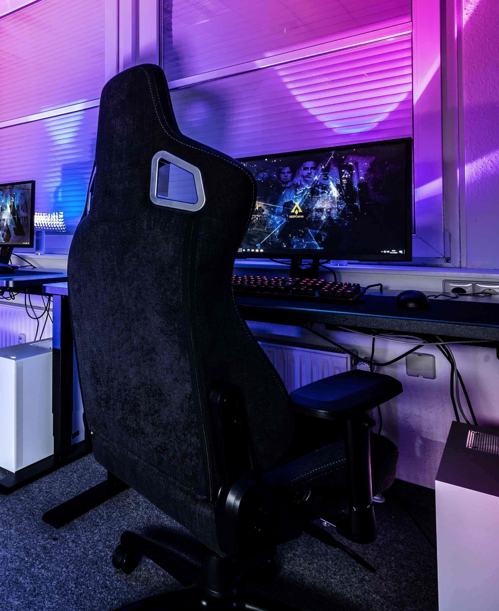

T1 선수들소개
- 페이커
- 제우스
- 오너
- 구마유시
- 케리아
LOL e스포츠
리그 오브 레전드의 대한민국 서버 개시를 시작으로 한국에서의 인기가 증가하여, 2012년 온게임넷에서 개최한 리그 오브 레전드 인비테이셔널 대회를 시범 대회로 시작하여 한국에 리그오브레전드 더 챔피언스라는 이름으로 정식 리그가 개최되며 인기가 시들어가는 스타크래프트2와 스타리그를 대체할 새로운 주력 E스포츠 종목으로 자리매김하였다.
리그 오브 레전드의 개발사인 라이엇 게임즈는 시즌 3인 2013년부터 북미, 유럽 지역에서 직접 리그를 운영하고 있다. 또한, 2011년부터 매년 가을마다 전 세계 최강팀을 가리는 자리인 월드 챔피언십을 개최하며 세계 각국의 많은 E스포츠 팬들의 관심을 모으고 있다.
2014년 월드 챔피언십 결승전이 서울 상암에서 개최됐는데 이날 경기는 무려 4만 명이 넘는 유료관객이 참가했다.
e스포츠 역사

리그 오브 레전드의 등장은 e스포츠 판에도 지대한 영향을 끼치게 되었다. 출시하기 전부터 관심도 많았던 게임이고. MOBA 장르 특성상 e스포츠에 대한 기대도 높았다. 출시 후 솟아오르는 인기와 더불어 온게임넷에서도 2012년 3월부터 총 상금 2억원의 리그가 개최된 것을 시작으로 지속적으로 대회가 개최되고 있다.
리그 오브 레전드 시즌 2 월드 챔피언십을 기점으로 롤 대회는 대단히 성공했다고 볼 수 있다. 세계적으로 대회도 많이 열리며, 국내에서도 다수의 게임단이 창단되어 있는 상태. 이 후 2013년 2월 28일에 열린 2012 한국 e스포츠 대상 시상식에서 최우수 종목상을 수상하며, 사실상 e스포츠를 시작하게 만든 스타크래프트의 입지를 완벽하게 계승했다고 봐도 무방하다. 현재는 가히 타 스포츠 리그와 겨뤄도 밀리지 않는 대형리그로 성장했고, 자국리그체제까지 갖춰져 진정한 스포츠 리그로 정착했다. 사실 세계적으로 자국리그가 정착되어 활성화된 스포츠는 축구, 농구, 럭비, 아이스하키, 핸드볼, 배구 정도이며, 이들 수준으로 세계적으로 자국리그를 갖춘 스포츠가 된 것이다.